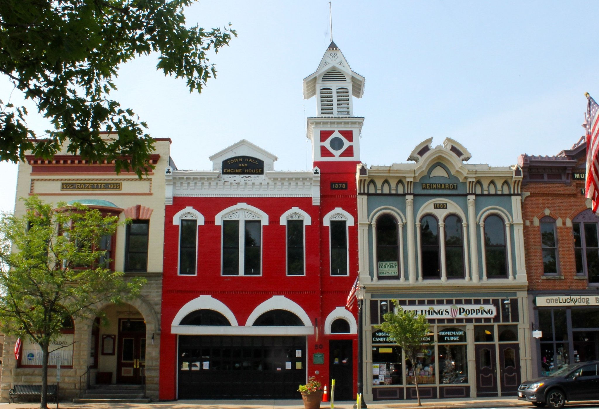

Checkpoint: Medina
Now, we reach the town of Medina, Ohio. While a nice place to visit, it does not have too much in the way of
interesting facts. Namely, it is notable for it's beatiful public square. Pictured above is the city's Town Hall and Engine House
(image courtesy of cleveland.com). This
town square has some beautiful buildings, including the firehouse above and the county courthouse on the other side, restaurtants, and
other fun stores including an old train and toy store!
However, there are some important people from this town. Among them are Kyle Juszczyk, fullback for the San Francisco 49ers, Jon Teske, who played basketball for the University of Michigan, Matthew Patrick, creator and host of the popular internet series "Game Theory," and Scott Fahlman, who created the emoticon (information courtesy of wikipedia). While he did not create the graphican representations that are commonly used today when communicating via text, he created the text-based ones, and is most well-known for creating the :-) face to symbolize a happy face. While not a groundbreaking or hugely influential accomplishment, this is somewhat significant, considering how often people use emojis when texting with friends, communicating with people over social media, emails, or really any kind of text-based commincation. This is not his only accomplishment, as he is also a Professor Emeritus at the prestigeous Carnegie Mellon computer science school, a Fellow of the Association for the Advancement of Artificial Intelligence, and much more (information courtesy of Carnegie Mellon Univeristy). However, the sheer abundance of this particular development makes it extremely interesting to note. While Medina did not give way to any household names, perse, the notable people hailing from here cover a wide range of interests, from professional sports, to YouTube stars, to accomplished academics who changed the way we text with one another.
To further explore the city of Medina, click here
Pedaling for Parkinson's claims no affiliation with Google Street View